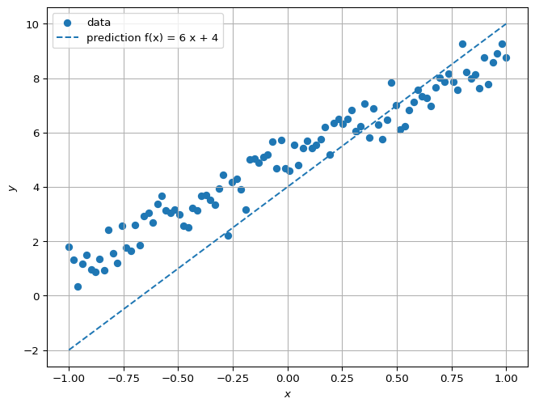
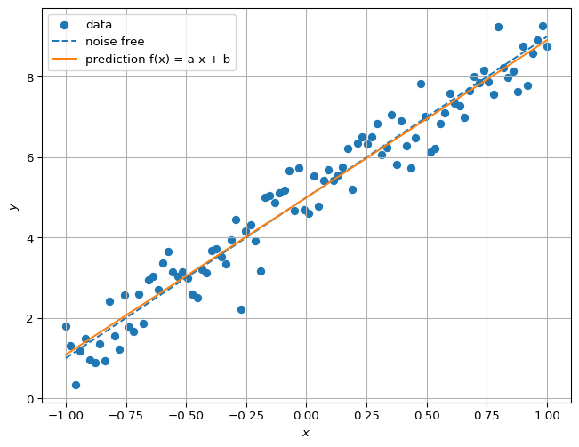
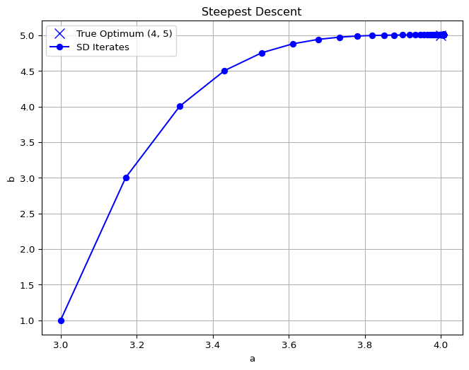
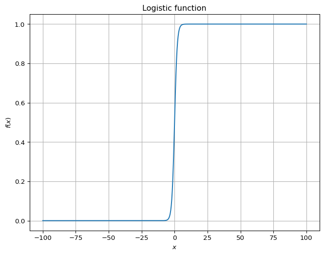
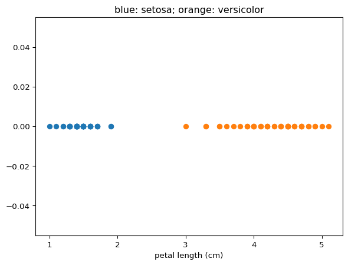
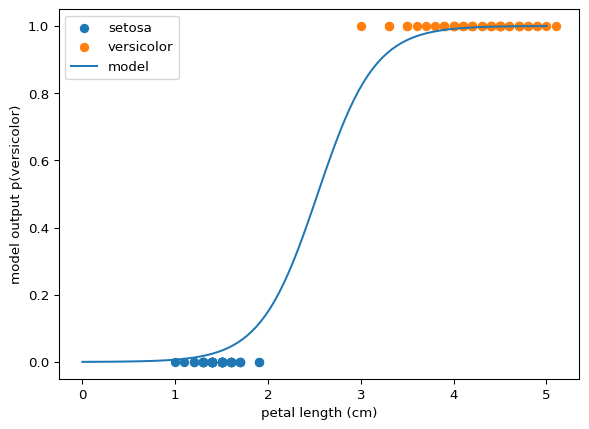
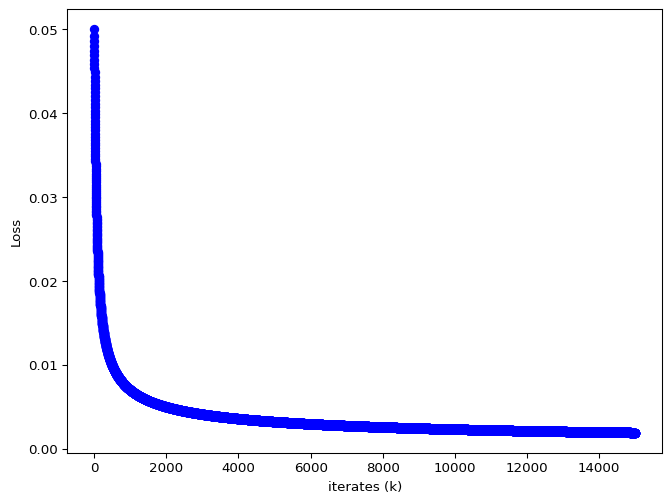

Simple Models
Linear Models & Regression
Suppose we have noisy data \((x_i,y_i)_{1,\dots,N}\) that corresponds to a true function \(f(x)= 4 x + 5\). It looks like:
Our goal is to identify \(f(x)\) from data \((x_i,y_i)_{1,\dots,N}\).
We can cheat a bit and claim that the relationship is given by a linear model: \[ f(x) = a x +b.\]
Given a datum, say \((x_2,y_2)\), our guess for \(f(x_2)\) is \(a x_2 +b\). If we know that \(a=4\) and \(b=5\), we would get \(y_2 = f(x_2)\) (ignoring noise). If we don’t have a good guess, then \(f(x_2)\) may not be close to \(y_2\):

The most used method for identifying, or learning, \(a\) and \(b\) is precisely to find values for those parameters that minimize the average (squared) error between \(y_i\) and \(f(x_i) = a x_i + b\). Let the error for \((x_i,y_i)\) be \(e_i = y_i - a x_i - b\). We want to minimize \[ \frac{1}{N} \sum_{i=1}^N e_i^2. \]
This expression is called the Loss function. It is a measure of how bad the guess for \(a\) and \(b\) are. \[ L(a,b) = \frac{1}{N} \sum_{i=1}^N e_i(a,b)^2, \] where we now make the dependence of \(e_i\) on \(a\) and \(b\) explicit. We can combine all the scalar values \(e_i\) into the vector \(\mathbf{e}\): \[\mathbf{e} = \begin{bmatrix}e_1\\e_2\\e_3\\ \vdots\\e_N\end{bmatrix} = \begin{bmatrix}y_1 - a x_1 - b\\y_2 - a x_2 - b\\y_3 - a x_3 - b\\ \vdots\\y_N - a x_N - b\end{bmatrix} = \mathbf{y} - \begin{bmatrix} \mathbf{x} & \mathbf{1} \end{bmatrix} \begin{bmatrix} a \\ b \end{bmatrix} = \mathbf{y} - \mathbf{X} \theta.\] In fact, we did a lot of combining scalars into vectors and matrices. It allows us to rewrite the Loss function:
\[ L(a,b) = L(\theta) = \frac{1}{N} \mathbf{e}^\top \mathbf{e}. \]
We want to find \(\theta = [a;b]\) that minimizes this function. Our learning problem is now an unconstrained optimization problem with a differentiable objective.
\[ \theta^\star = \arg \min_\theta L(\theta). \]
The theory for this objective function is especially nice so we can derive a closed-form solution for the minimizer:
\[ \theta^\star = \left(\mathbf{X}^\top \mathbf{X}\right)^{-1} \mathbf{X}^\top \mathbf{y}.\]
## Closed-form solution compare prediction with true model
Xt = np.stack([x,np.ones(100)]) # build transpose of X
theta = np.linalg.inv(Xt @ Xt.T) @ (Xt @ y.T ) # Implement the equation above using numpy (np)
print(f"a = {theta[0]}, b = {theta[1]}")
y_opt = theta[0]*x + theta[1] # prediction using these optimal parameters
plt.figure(figsize=(8, 6))
# plot data, noise free, prediction:
plt.scatter(x,y,label="data")
plt.plot(x,y_line,label="noise free",linestyle="dashed")
plt.plot(x,y_opt,label=f"prediction f(x) = a x + b")
plt.xlabel(f"$x$")
plt.ylabel("$y$")
plt.grid(True)
plt.legend()
plt.show()a = 3.912437593039594, b = 4.998100325639219
Gradient Descent
We found \(\theta = [a;b]\) by solving the unconstrained minimization problem in closed form. An alternative is to use an iterative algorithm that tries to pick a new guess for \(\theta\) that has a lower loss. For differentiable objectives, one algorithm is steepest descent:
\[\theta_{k+1} = \theta_{k} - \alpha \nabla L(\theta_k),\]
where \(\alpha\) is a step size and \(\nabla L\) is the gradient of the Loss function.
The iterates of \(\theta\) and the loss value are given below.
a = 4.006384632625632, b = 5.005149393190814
Logistic Regression
Regression tries to find a relationship between two continuous variables. In many problems, the input to a model may be continuous, but the output we want is discrete valued. For example, our body temperature is continuous valued, but we may want to use it to decide whether to call in sick or not.
We can still use continuous regression, but with the trick that outputs are integer valued, and our models are biased to producing nearly-integral outputs for most inputs.
For example, consider the standard logistic function: \[f(x) = \frac{1}{1+e^{-x}}.\] Away from \(x=0\), the value is close to either \(0\) or \(1\). This number is often interpreted as a probability of belonging to a class.

Partial Iris Classification
The full classification tries to distinguish between three species of Irises:
- setosa
- versicolor
- virginica
based on four measurements collected by Ronald Fisher:
- sepal length
- sepal width
- petal length
- petal width
Here, we will solve a partial version of this classification problem. We will try to predict whether an iris belongs to species setosa or versicolor from the petal length. The data look like:

We assign distinct integer variables to the two classes, namely \(0\) and \(1\):
The data suggest we can use an \(S\)-shaped curve to map petal length to a number that we interpret as the probability of the petal belonging to species versicolor.
The model is \[ p(\text{versicolor} | x) = \frac{1}{1 + e^\left( a x + b\right)}. \]
We have data \((x_i,y_i)\) where \(x_i\) is the petal length of the \(i^{\mathrm{th}}\) flower and \(y_i\) is \(0\) if it is of species setosa and \(1\) if it is of species versicolor. Then, we can learn parameters \(a\) and \(b\) by minimizing a mean squared error loss function using gradient descent:
a = -3.2454446383309143, b = -8.2278103097029
The prediction for all inputs overlaying the data:

More Features
What if we use all four measurements (input features) to do the same classification task?
\[ p(\text{versicolor} | x) = \frac{1}{1 + e^\left( w^\top x + b\right)}, \]
where \(w \in \mathbb R^4\).
The mean squared error loss is not convex in the parameters. We use gradient descent to optimize this function.
w = [ 0.47315506 1.7278686 -2.66159651 -1.20674271], b = -0.30153672562670286
Confusion Matrix:
[[50 0]
[ 0 50]]Note that a confusion matrix \(C\) is such that \(C_{i,j}\) is equal to the number of observations known to be in group \(i\) and predicted to be in group \(j\).
You can see that this classifier works perfectly on the data. This result is unsurprising. Take a look at the data:

You can draw lines that divide setosa and versicolor using just two features, never mind all four at the same time. This property means that our model was destined to succeed perfectly for this partial classification. What do you expect will happen if we wanted to distinguish between versicolor and virginica? Would this model distinguish between all three?
Let’s try training a classifier to distinguish between versicolor and virginica. We get a solution:
w = [ 3.83121395 4.19340142 -6.45287598 -7.70857748], b = -8.566849954768172Confusion Matrix:
[[48 2]
[ 0 50]]The results are reasonably good. Let’s look at the code. We load data, define a loss function which contains the model, define a gradient, then train , and finally evaluate the model. This pattern is fairly common.
## Custom gradient descent to solve versicolor vs virginica classification using only four feature
import numpy as np
import matplotlib.pyplot as plt
from sklearn.datasets import load_iris
def load_two_species(species_pair=(0, 1), *, remap=True):
if len(species_pair) != 2:
raise ValueError("species_pair must contain exactly two integers (e.g. (0, 2)).")
if not all(label in {0, 1, 2} for label in species_pair):
raise ValueError("Labels must be chosen from 0, 1, 2.")
iris = load_iris()
X_all, y_all = iris.data, iris.target
# Boolean mask: keep rows whose label is in species_pair
mask = np.isin(y_all, species_pair)
X, y = X_all[mask], y_all[mask]
if remap:
# Map the first chosen label → 0, the second → 1
label_map = {species_pair[0]: 0, species_pair[1]: 1}
y = np.vectorize(label_map.get)(y)
return X, y
# Load the dataset to get names
iris = load_iris()
# Access the data, only two species
iris_species_1 = 1
iris_species_2 = 2
X, y = load_two_species((iris_species_1, iris_species_2))
# Define the objective function and its gradient
def L(w, b):
e = y - 1/(1+np.exp(X @ w-b*np.ones(100)))
return np.linalg.norm(e)/100
def grad_L(w, b):
"""Gradient of f"""
e = y - 1/(1+np.exp(X @ w-b*np.ones(100)))
act = 1/(1+np.exp(X @ w-b*np.ones(100)))
grad_w = np.zeros(4)
for i in range(0,4):
grad_w[i] = np.sum(e * act * (1-act) * X[:,i])
grad_b = -np.sum(e *act * (1-act))
return np.concatenate([grad_w, np.array([grad_b])])*1/100
# Steepest Descent
def steepest_descent(start, alpha=0.1,tol=1e-6, max_iter=150000):
theta = np.array(start, dtype=float)
iterates = [theta.copy()]
optimal_values=[L(theta[:4],theta[4])]
for _ in range(max_iter):
grad = grad_L(theta[:4], theta[4])
# Newton step: x_new = x - H_inv * grad
theta -= alpha*grad
iterates.append(theta.copy())
optimal_values.append(L(theta[:4],theta[4]))
# Convergence check
if np.linalg.norm(grad) < tol:
break
return theta, iterates, optimal_values
# Pick an initial point $\theta_0$
start_point = np.array([1.0,1.0,-5.0,0.0, -10.0])*0.0
# Run gradient descent
optimum, iterates, optimal_values = steepest_descent(start_point)
# Extract iterate points for printing and plotting
iterates = np.array(iterates)
print(f"w = {iterates[-1,:4]}, b = {iterates[-1,4]}")
# Plotting: Loss
plt.figure(figsize=(8, 6))
plt.plot(range(0,len(optimal_values)),optimal_values, 'o-', color="blue")
plt.xlabel("iterates (k)")
plt.ylabel(f"Loss")
plt.show()
# Show Confusion Matrix
w = iterates[-1,:4]
b = iterates[-1,4]
y_pred = 1/(1+np.exp(X @ w -b*np.ones(100)))
from sklearn.metrics import confusion_matrix
cm = confusion_matrix(y,np.round(y_pred))
print("Confusion Matrix:\n",cm)What’s Next
Everything looks reasonable so far. We had data, we proposed parametrized models, and we fit the model parameters to the data using optimization and we looked at the results. We ignored the many challenges when working on real problems:
- What should the initial guess be for gradient descent? What should the step-size be?
- How do you evaluate models when you can’t visually inspect the models outputs and ground truth?
- How will you obtain gradients for more complex models?
- What happens to gradient descent when you have millions of data points?